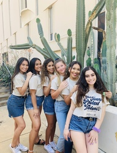
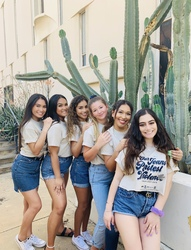
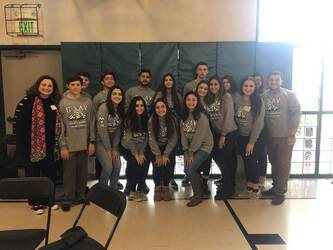
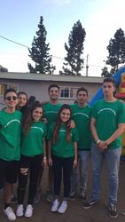
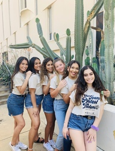
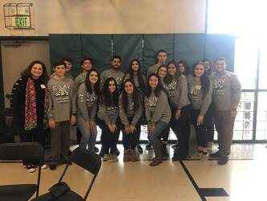
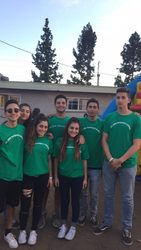

Bella Bashoura
My name is Bella Bashoura and I am a pre-business major concentrating in Business Management. I currently am attending the University of California, Riverside. I was born in a city called Glendora in California. I grew up in Glendora my whole life and it will always be a part of me and how I became the person I am today. For my future, I plan to one day have my own business and manage it with my sister, who is one year older than me. We both have experience in management from helping out our parents in their business. Working for them has given me a better perspective on what it takes to own and run a business.
What sets me apart from other professionals is that I have strong determination and once I start something, I will not stop until it is completed in the way it was intended. I have had previous experience in working on projects that are not easy but did need the drive and perseverance that I gained. I believe I am very knowledgeable with technology, which is very relevant to the world we live in today. I have been working with the different types of laptops ever since I was a child and it is interesting to see how much they have developed throughout the years. I also have an interest in mathematics. I believe that being good at math is very beneficial in life and makes everything easier, especially in the business world.
I come from a family of successful business workers so I have always looked up to them as my role models. I am willing and prepared to do what it takes to have a successful career and life-long job. I have always enjoyed being a peoples-person and I believe that I have the communication skills to make sure that wherever I work, everyone is happy and is doing what they are supposed to. I enjoy having fun and being productive while doing so. Traveling is something that I believe is very necessary and is also very enjoyable. By going to other states and countries, you get a sense of how diverse people are and how different people and businesses operate. To go into more personal parts of my life, I have volunteered for a variety of different organizations, churches, and am apart of many clubs. Volunteering is special because I enjoy giving my time to better the community around us. I think it is a great learning experience for anyone to partake in and I know I have gained so much from it. I have participated in my community in many different ways from volunteering for hospitals, community service programs, to local churches in my hometown.
Experience
Receptionist
• Received and answered phone calls
• Ran errands for the boss
• Organized files and contacted insurance companies
Sales Associate
• Customer service
• Ran errands for workers above me
• Recording inventory
• Making phone calls and deliveries
Volunteer
• Volunteer in Thrift Shop
• Help as needed in storage unit
• Assemble Hygeine kits for Operation School Bell
• Assemble food bags for local food bank
Education
UC Riverside
Portfolio
 




 